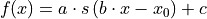

hyperspy._components.scalable_fixed_pattern module¶
-
class
hyperspy._components.scalable_fixed_pattern.ScalableFixedPattern(signal1D, yscale=1.0, xscale=1.0, shift=0.0, interpolate=True)¶ Bases:
hyperspy.component.ComponentFixed pattern component with interpolation support.

Variable
Parameter

yscale

xscale

shift
The fixed pattern is defined by a single spectrum which must be provided to the ScalableFixedPattern constructor, e.g.:
In [1]: s = load('my_spectrum.hspy') In [2]: my_fixed_pattern = components.ScalableFixedPattern(s))
- Parameters
yscale (Float) –
xscale (Float) –
shift (Float) –
interpolate (Bool) – If False no interpolation is performed and only a y-scaled spectrum is returned.
-
prepare_interpolator : method to fine tune the interpolation
-
function_nd(axis)¶ Returns a numpy array containing the value of the component for all indices. If enough memory is available, this is useful to quickly to obtain the fitted component without iterating over the navigation axes.
-
gui(display=True, toolkit=None, **kwargs)¶ Display or return interactive GUI element if available.
- Parameters
display (bool) – If True, display the user interface widgets. If False, return the widgets container in a dictionary, usually for customisation or testing.
toolkit (str, iterable of strings or None) – If None (default), all available widgets are displayed or returned. If string, only the widgets of the selected toolkit are displayed if available. If an interable of toolkit strings, the widgets of all listed toolkits are displayed or returned.
-
prepare_interpolator(kind='linear', fill_value=0, **kwargs)¶ Prepare interpolation.
- Parameters
x (array) – The spectral axis of the fixed pattern
kind (str or int, optional) – Specifies the kind of interpolation as a string (‘linear’, ‘nearest’, ‘zero’, ‘slinear’, ‘quadratic, ‘cubic’) or as an integer specifying the order of the spline interpolator to use. Default is ‘linear’.
fill_value (float, optional) – If provided, then this value will be used to fill in for requested points outside of the data range. If not provided, then the default is NaN.
Notes
Any extra keyword argument is passed to scipy.interpolate.interp1d